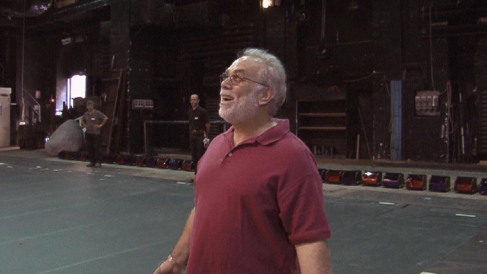
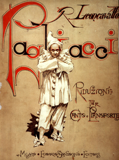

My Brief Moment as an Italian Opera Singer In the summer of 2007, Mei-O and I and several friends took a
trip to Europe which included several days
in Rome. One day, as we were walking the streets of the city, we passed the Rome Opera House. The side
stage doors were open, and there were stagehands inside setting up for something. As I peered in, one of
them motioned for us to come in (a rare gesture of hospitality in Europe!), so in we went. It was beautiful;
I stood on the stage, peered out into the eerily
lit empty theater, and, as the stagehands watched and listened, I sang just a few words of the aria
Vesti La Giubba (Put on
the Costume - often referred to as Ridi, Pagliaccio) from the Italian opera
Pagliacci, which my mother used
to sing around the house when I was just a little kid. Although it's an extremely sad aria, I couldn't help
but smiling as I sang, realizing that I was singing on the stage of the Rome Opera House!
What a memorable experience!
Pagliacci  by Ruggero Leoncavallo A Short Synopsis Montalto in Calabria, Sicily; The Feast of the Assumption circa 1870 A troupe of strolling players arrives in the Sicilian village of Calabria to perform a comic play. Having drummed up support for the production amongst the townsfolk, Canio retires to the tavern for a drink while Tonio takes advantage of Canio's absence to declare his love for Nedda, Canio's wife. She firmly rejects his advances and is forced to defend herself with a whip when he tries to kiss her. Nedda is in love with Silvio who has persuaded her to elope with him after the play that night. However, Tonio overhears their declarations of love and, seeking revenge on Nedda, informs Canio of her betrayal. Canio returns too late to catch her lover but, threatening her with a knife, demands to know his name. She refuses and he is only prevented from carrying out his threats by Peppe who disarms him and persuades them all to get ready for the evening's performance. At first the play exactly mirrors events to date - Taddeo's professions of love for Columbine are rejected in favour of Harlequin's and when Pagliaccio discovers she has a lover he demands that she confess his name. It soon becomes clear, however, that Canio is referring to Nedda's lover in reality and is no longer acting the part of Pagliaccio. When she declares that she will never divulge his name, Canio, in a jealous rage, lunges at her with a knife and strikes her down. As she collapses, she calls for Silvio thereby identifying her lover. As he rushes to her side, he too is fatally wounded by Canio, and the "comedy" comes abruptly to a close amid much confusion. Here's the bit of Vesti La Giubba that I sang (in Italian), although not quite as good as this guy:
|
{kind=link}